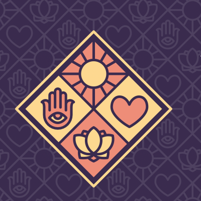

Урусвати · Татьяна КиндраПрактикующий психолог, нумеролог и астролог (джйотиш). Два высших образования — техническое и психологическое. Работает с кармой, отношениями, финансовыми блоками и предназначением.
Персональные текстовые отчёты, ответы на уточняющие вопросы в течение 10 дней без доплаты.
Старт 13 сентября. Ведические практики коррекции кармы.